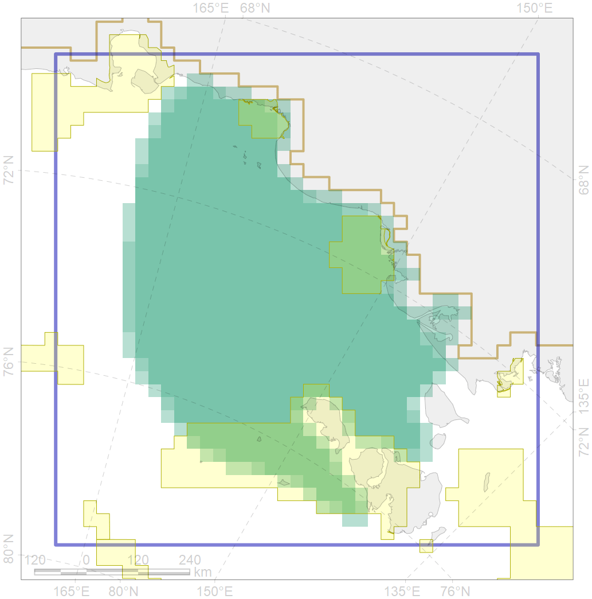
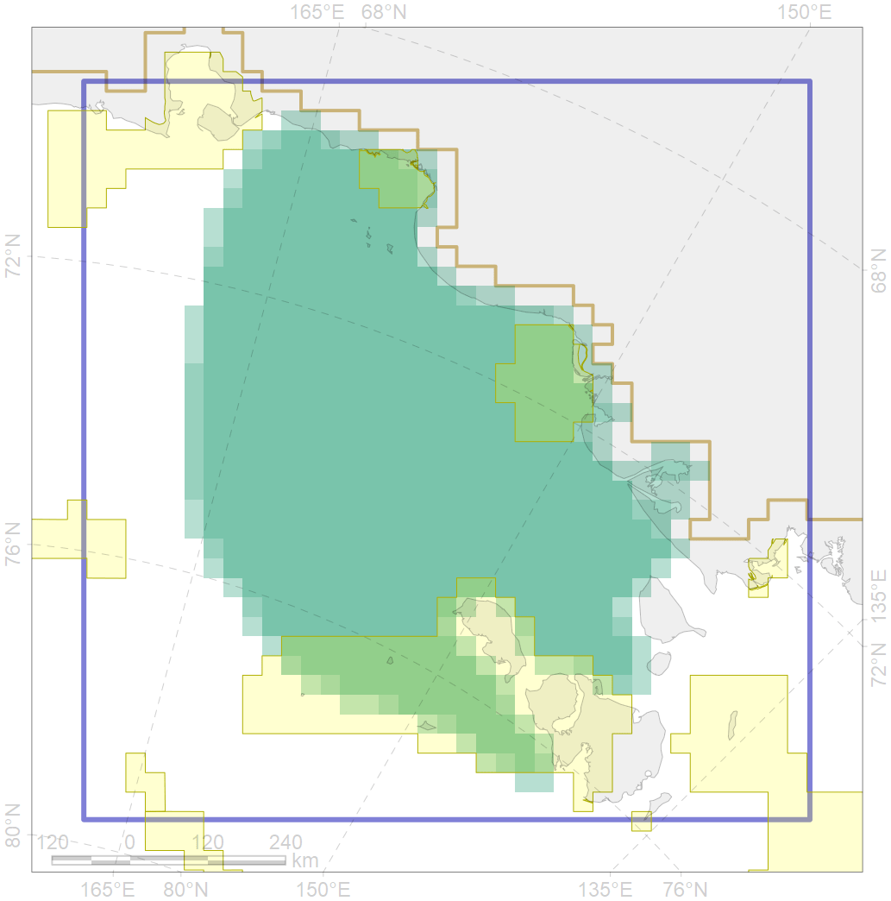

4092
 

| CF code | 4092 |
| CF name | Estuarian (Indigirka-Kolyma) brackish –water fish complex |
| Time Period | |
| Source(s) | match with the layer of the“river runoff derived water in the East-Siberian and Laptev seas” (Spiridonov et al., 2017, fig 2) ; first - for the Laptev Sea, second - for the East-Siberian Sea |
| Seasonality | |
| Depth Horizon | |
| Methodology | |
| Use Restrictions | |
| Author Name | |
| Notes | |
| Scenario’s Target | 0.06 |
| Target Achievement | 0.183 (Scenario: 304.8%) |
| PAC | Share of the Total Amount within the PAC | Share of the Target Achievement for the ArcNet | PAC’s Contribution to the Target Achievement |
|---|---|---|---|
| 9 | 1.5%1.7% | 16.0%16.4% | 5.2%5.4% |
| 10 | 4.5%4.5% | 57.7%58.1% | 18.9%19.1% |
| 11 | 9.6% | 157.3% | 51.6% |
| inner | 15.7%15.8% | 231.0%231.8% | 75.8%76.0% |
| outer | 84.3%85.8% | 73.8%92.9% | 24.2%30.5% |
| † supplement values are for area consistence whereas principal values are for Accenter compatible gridded stats |